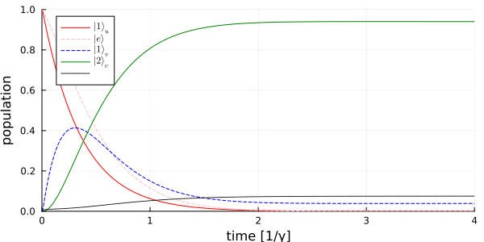

Stimulated Emission
We simulate the emission of an atom stimulated by an incident quantum pulse. In particular, how efficiently such stimulated emission occurs into the mode occupied by the incident photons. This system is described in A. Kiilerich, et al., Phys. Rev. Lett. 123, 123604 (2019). The initially excited atom has a decay rate $\Gamma$ and the incident quantum pulse is a single photon in an exponentially decaying mode $u(t) = \sqrt{\Gamma} e^{-\Gamma t/2}$.
We start by loading the packages and defining the symbolic operators and parameters.
using QuantumInputOutput
using SecondQuantizedAlgebra
using QuantumOptics
using Plots
using LaTeXStrings# symbolic Hilbert spaces
hu1 = FockSpace(:u1)
hc1 = NLevelSpace(:atom1, 2)
hv1 = FockSpace(:v1)
h = hu1 ⊗ hc1 ⊗ hv1
# symbolic operators
au = Destroy(h, :a_u, 1)
σ(i, j) = Transition(h, :σ, i, j, 2)
av = Destroy(h, :a_v, 3)
# symbolic parameters
@rnumbers γ Δ Γ
gv = rnumber("g_v")We use the symbolic operators and parameters to define the SLH triples and cascade them to obtain the Hamiltonian and Lindblad for the system.
G_u = SLH(1, √(Γ)*au, 0) # input cavity
G_c = SLH(1, √(γ)*σ(1, 2), Δ*σ(2, 2)) # two-level atom
G_v = SLH(1, gv'*av, 0) # output cavity
G_cas = G_u ▷ G_c ▷ G_vH = G_cas.hamiltonian\[-0.5 i \sqrt{\Gamma} \sqrt{\gamma} a_{u} {\sigma}^{{21}} + 0.5 i \sqrt{\gamma} g_{v} {\sigma}^{{21}} a_{v} -0.5 i \sqrt{\gamma} g_{v} {\sigma}^{{12}} a_v^\dagger + \Delta {\sigma}^{{22}} -0.5 i \sqrt{\Gamma} g_{v} a_{u} a_v^\dagger + 0.5 i \sqrt{\Gamma} \sqrt{\gamma} a_u^\dagger {\sigma}^{{12}} + 0.5 i \sqrt{\Gamma} g_{v} a_u^\dagger a_{v}\]
L = G_cas.lindblad[1] # only one Lindblad in this example\[g_{v} a_{v} + \sqrt{\Gamma} a_{u} + \sqrt{\gamma} {\sigma}^{{12}}\]
# numerical parameters and functions
γ_ = 1.0
Δ_ = 0.0
Γ_ = γ_/0.36
p_sym = [γ, Δ, Γ]
p_num = [γ_, Δ_, Γ_]
dict_p = Dict(p_sym .=> p_num)
gv_(t) = √(Γ_/(exp(Γ_*t) - 1))
dict_p_t = Dict(gv => gv_)
T = [0.001:0.001:1;]*4.0
ΔT = T[2] - T[1]We use the function translate_qo to create the numeric operators and solve the dynamics with the function timeevolution.master_dynamic in QuantumOptics.jl.
# numeric bases
bu1 = FockBasis(1)
ba1 = NLevelBasis(2)
bv1 = FockBasis(2)
b = bu1 ⊗ ba1 ⊗ bv1
H_QO = translate_qo(H, b; parameter = dict_p, time_parameter = dict_p_t)
L_QO = translate_qo(L, b; parameter = dict_p, time_parameter = dict_p_t)
function input_output(t, ρ)
H = H_QO(t)
J = [L_QO(t)]
return H, J, dagger.(J)
end;
# initial state
ψ0 = fockstate(bu1, 1) ⊗ nlevelstate(ba1, 2) ⊗ fockstate(bv1, 0)
# time evolution
t_, ρt = timeevolution.master_dynamic(T, ψ0, input_output)To calculate expectation values we create the desired numerical operators.
au_qo = translate_qo(au, b)
σ_qo(i, j) = translate_qo(σ(i, j), b)
av_qo = translate_qo(av, b)
proj_u(n) = embed(b, 1, projector(fockstate(bu1, n)))
proj_v(n) = embed(b, 3, projector(fockstate(bv1, n)))
popu_u_n1 = real.(expect(proj_u(1), ρt))
popu_e = real.(expect(σ_qo(2, 2), ρt))
popu_v_n1 = real.(expect(proj_v(1), ρt))
popu_v_n2 = real.(expect(proj_v(2), ρt))
L0(t) = √(γ_)*σ_qo(1, 2) + √(Γ_)*au_qo + gv_(t)*av_qo
I_out = [real(expect(dagger(L0(t_[i]))*L0(t_[i]), ρt[i])) for i = 1:length(t_)]
I_out_int = [0.0]
for i = 2:length(I_out)
push!(I_out_int, I_out_int[end]+I_out[i]*ΔT)
endp = plot(t_, popu_u_n1; color = :red, label = L"| 1 \rangle_u")
plot!(p, t_, popu_e; color = :pink, ls = :dash, label = L"| e \rangle")
plot!(p, t_, popu_v_n1; color = :blue, ls = :dash, label = L"| 1 \rangle_v")
plot!(p, t_, popu_v_n2; color = :green, label = L"| 2 \rangle_v")
plot!(p, t_, I_out_int; color = :black, ls = :dot, label = L"\\int I_{out} dt")
plot!(
p;
xlims = (0, 4),
ylims = (0, 1),
xlabel = "time [1/γ]",
ylabel = "population",
legend = :best,
size = (600, 300),
)
p
Package versions
These results were obtained using the following versions:
using InteractiveUtils
versioninfo()
using Pkg
Pkg.status(
[
"QuantumInputOutput",
"SecondQuantizedAlgebra",
"QuantumOptics",
"Plots",
"LaTeXStrings",
],
mode = PKGMODE_MANIFEST,
)Julia Version 1.12.5
Commit 5fe89b8ddc1 (2026-02-09 16:05 UTC)
Build Info:
Official https://julialang.org release
Platform Info:
OS: Linux (x86_64-linux-gnu)
CPU: 4 × AMD EPYC 7763 64-Core Processor
WORD_SIZE: 64
LLVM: libLLVM-18.1.7 (ORCJIT, znver3)
GC: Built with stock GC
Threads: 4 default, 1 interactive, 4 GC (on 4 virtual cores)
Environment:
JULIA_PKG_SERVER_REGISTRY_PREFERENCE = eager
JULIA_DEBUG = Documenter
JULIA_NUM_THREADS = auto
Status `~/work/QuantumInputOutput.jl/QuantumInputOutput.jl/docs/Manifest.toml`
[b964fa9f] LaTeXStrings v1.4.0
[91a5bcdd] Plots v1.41.6
[18f9eda6] QuantumInputOutput v0.1.0 `~/work/QuantumInputOutput.jl/QuantumInputOutput.jl`
[6e0679c1] QuantumOptics v1.2.4
[f7aa4685] SecondQuantizedAlgebra v0.4.4This page was generated using Literate.jl.